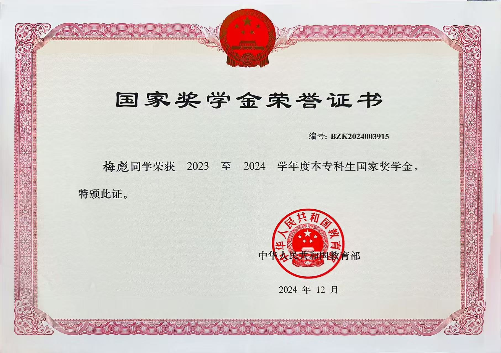
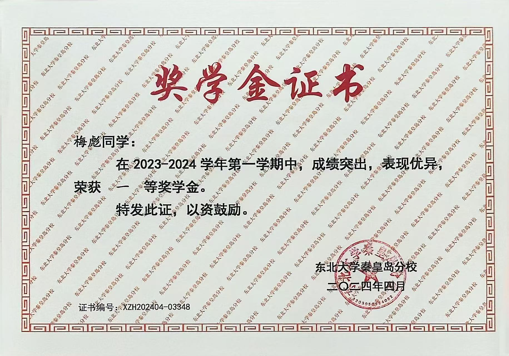
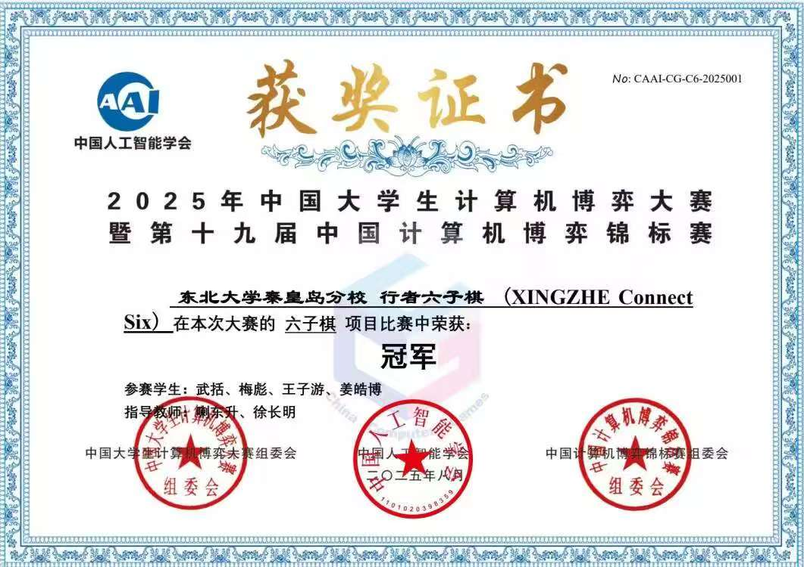
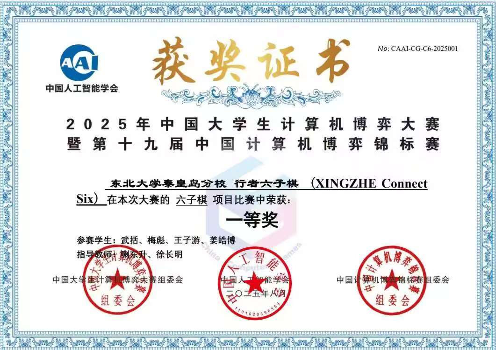
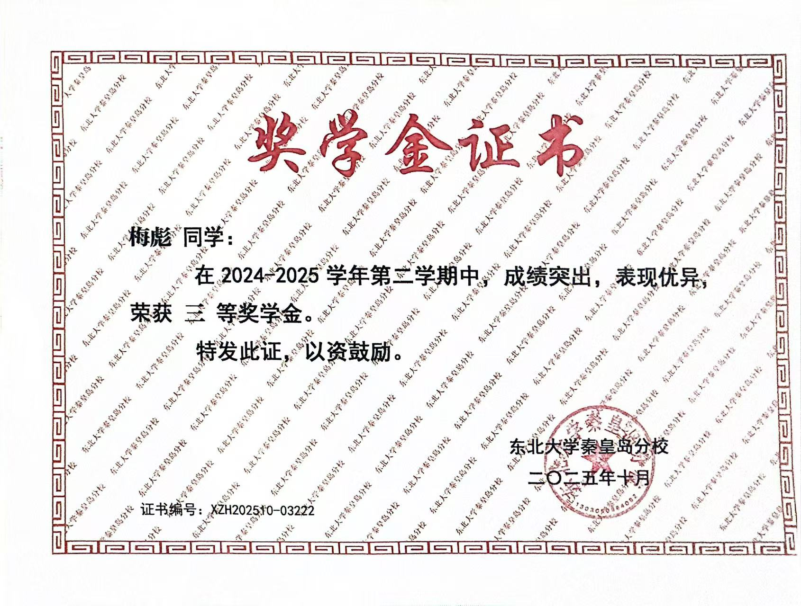
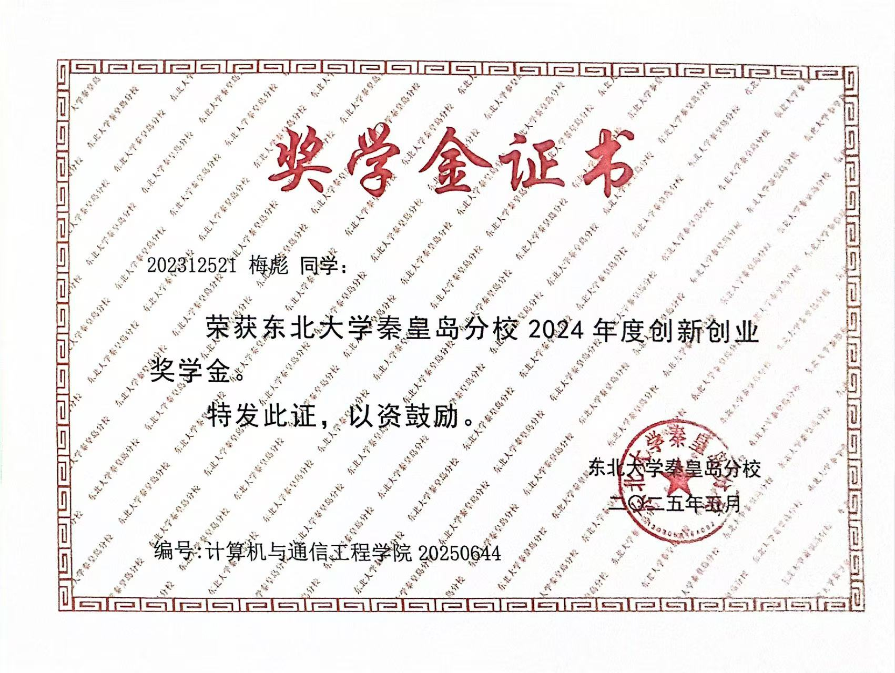
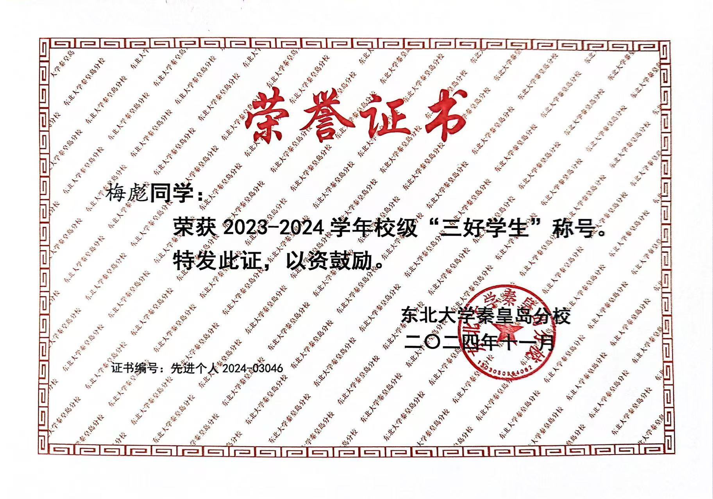
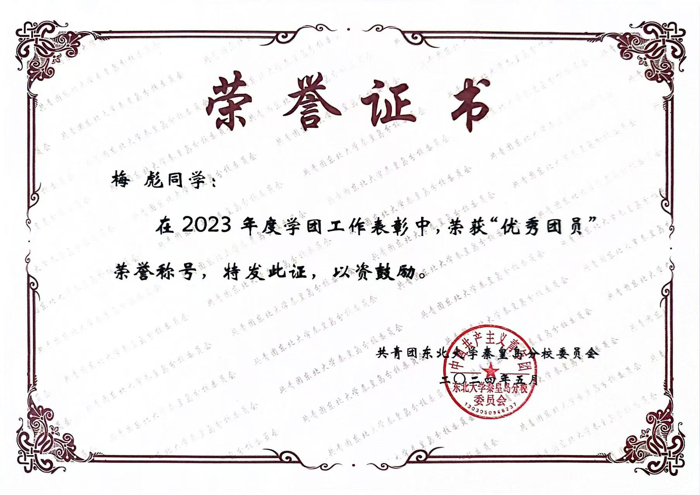
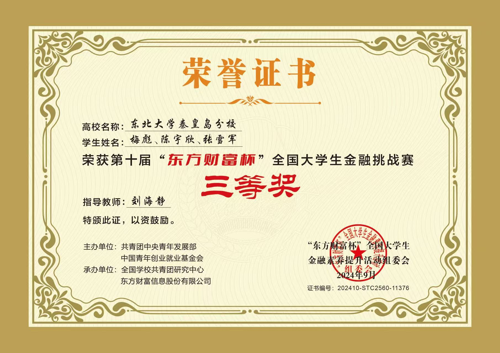

东北大学（985、双一流）计算机科学与技术专业本科生，目前专注于机器学习与机器博弈领域的研究。深入探索强化学习、博弈论与多智能体系统的交叉应用，参与棋类游戏和策略博弈的智能体训练。









本项目为秦皇岛科技展专项研发，创新性地将博弈智能体与六轴机械臂进行深度融合，构建了一套具备人机交互能力的自动下棋系统。系统通过视觉识别技术实时捕捉真实棋盘状态，结合强化学习训练的博弈算法生成最优落子策略，最终由机械臂精准执行落子动作，实现了从棋盘感知到决策执行的完整闭环。
针对铁路轨道电路的大规模多变量异常开发了MTCAR（Multivariate Track Circuit Anomaly Registry）数据库，该数据集包含10000条带有异常标签的多变量时序样本，旨在解决现有铁路信号监测研究中异常数据规模小、特征表征单一的问题，为深度学习驱动的铁路信号研究奠定数据基础。
基于深度强化学习框架，针对六子棋博弈智能体进行了系统性改进训练。通过并行蒙特卡洛树搜索（MCTS）与神经网络预测相结合的方式，在传统UCB公式基础上引入虚拟损失机制，鼓励探索更多有代表性的搜索节点。训练过程采用自我对弈生成海量对局数据，构建策略价值网络模型，实现从策略预测到价值评估的端到端优化。引入TSS威胁空间搜索算法，使搜索过程更贴近人类思考模式，大幅降低算法复杂度。结合GPU硬件加速与C++多线程编程，显著提升搜索效率，最终使智能体具备高响应度和强博弈能力。
基于深度强化学习框架，开发高性能六子棋博弈智能体，在全国大学生计算机博弈大赛中与来自各大高校的顶尖AI程序同台竞技。
获奖情况: 全国一等奖、冠军